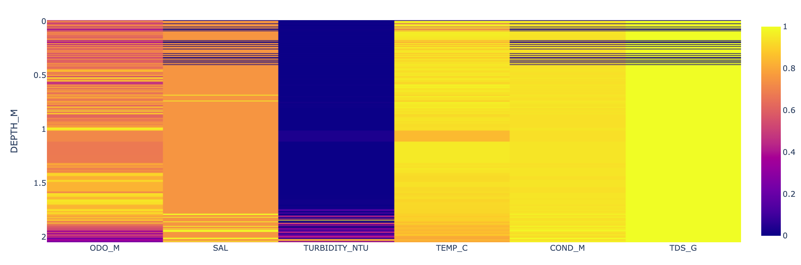
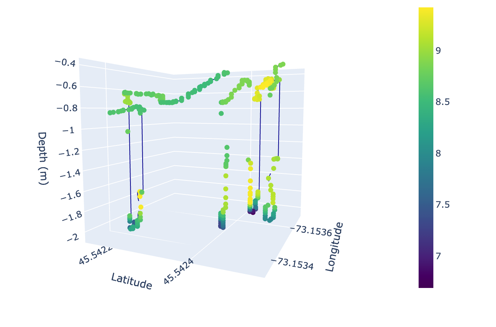
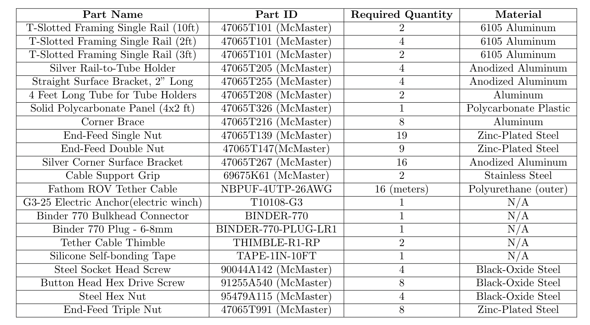

sampling at depth
sampling at depth
An Autonomous Probing System for Collecting Measurements at Depth from Small Surface Vehicles
Yuying Huang, Yiming Yao, Johanna Hansen, Jeremy Mallette, Sandeep Manjanna, Greg Dudek, David Meger
Abstract
This paper presents an automated, low-cost system for collecting sensor measurements at varying depths from small autonomous surface vehicles (ASVs). Our solution provides probe deployment with a design that is both portable and modular. In this paper, we propose a mechanical design with off-the-shelf components, discuss a closed-loop controller for safe probe deployment and recovery.
Sensor Correlation with Depth (click to interact with plot)

Plots of Optical Dissolved Oxygen and Temperature observed at Depth (click to interact with plot)
Optical Dissolved Oxygen

Optical Dissolved Oxygen observed at Depth (click to interact with plot)
Temperature (C) observed at Depth (click to interact with plot)
Bill of Materials
